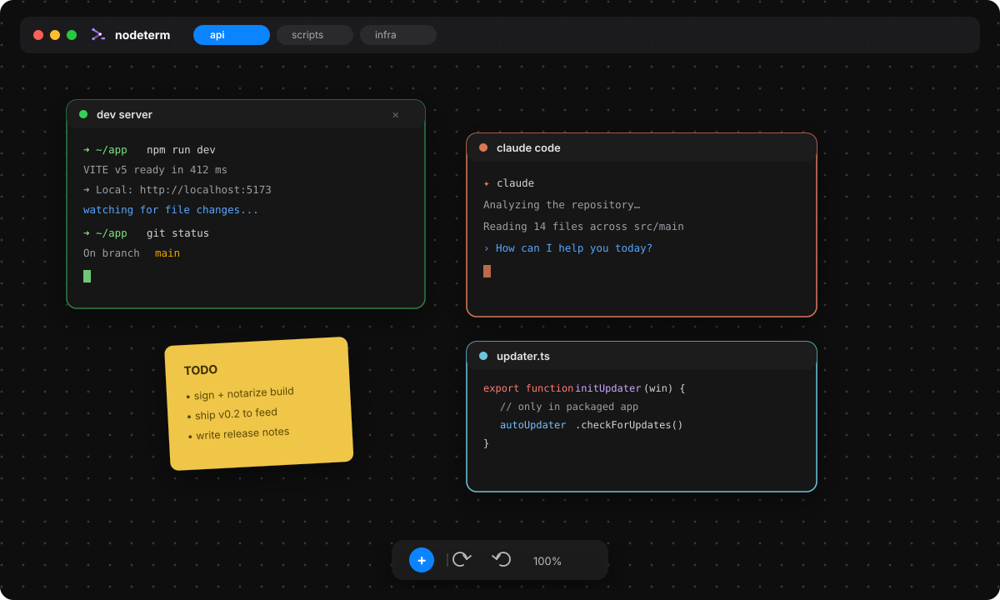

🖥 Real terminals as nodes
Each node runs its own shell (PTY). Drag, resize, pan, and zoom freely on an infinite canvas.
Multiple real terminals as draggable nodes on a single pan/zoom canvas — a spatial map instead of a stack of hidden tabs. Built for scattered, ADHD-friendly workflows.
Linux (x64): AppImage & .deb on
GitHub Releases
·
Homebrew: brew install --cask nodeterm
·
Build from source — see the
README

Each card below is a real, shipping capability — not marketing copy. See the documentation section for the full write-up of each one.
Each node runs its own shell (PTY). Drag, resize, pan, and zoom freely on an infinite canvas.
tmux keeps terminals — and their running processes — alive across restarts and even a machine reboot.
Each project is its own canvas with its own working directory; reorder, close, and reopen from history.
Claude Code, Codex, Gemini, opencode, Grok, and custom CLIs — one-click nodes with live status badges.
Context links between agents, branch a conversation, managed accounts, and agent-driven canvas control.
Monaco editor and diff viewer right on the canvas, next to your shells — image previews too.
File-level stage, diff, branch, commit, push — plus one-step git worktrees bound to canvas frames.
Every project doubles as a Trello-style board — cards are your live sessions, dragged between columns.
Open a project on a remote host over SSH; terminals, files, git, and the board all run there.
The same canvas, self-hosted in any browser — reach your terminals and agents from anywhere.
On-device Whisper dictation: hold a chord, speak, review, then send — nothing auto-submits.
Jump to any node, project, or action. File explorer, undo/redo, and a markdown view.
The app checks its own update feed and surfaces product news, right in the window.
Projects persist to a plain JSON file next to your code — git-shareable, machine-portable.
The primary app for macOS and Linux. Native window chrome, auto-update, and the full node set.
The identical renderer, self-hosted and served over plain HTTP/WebSocket to any browser.
npm run server:dev
An iOS app that attaches to the same live tmux sessions — watch an agent work, answer a prompt, or type from your phone.
Every feature has its own article: behaviour, configuration, failure modes, security considerations, and how it's verified.
Lay your work out in space.
Download nodeterm